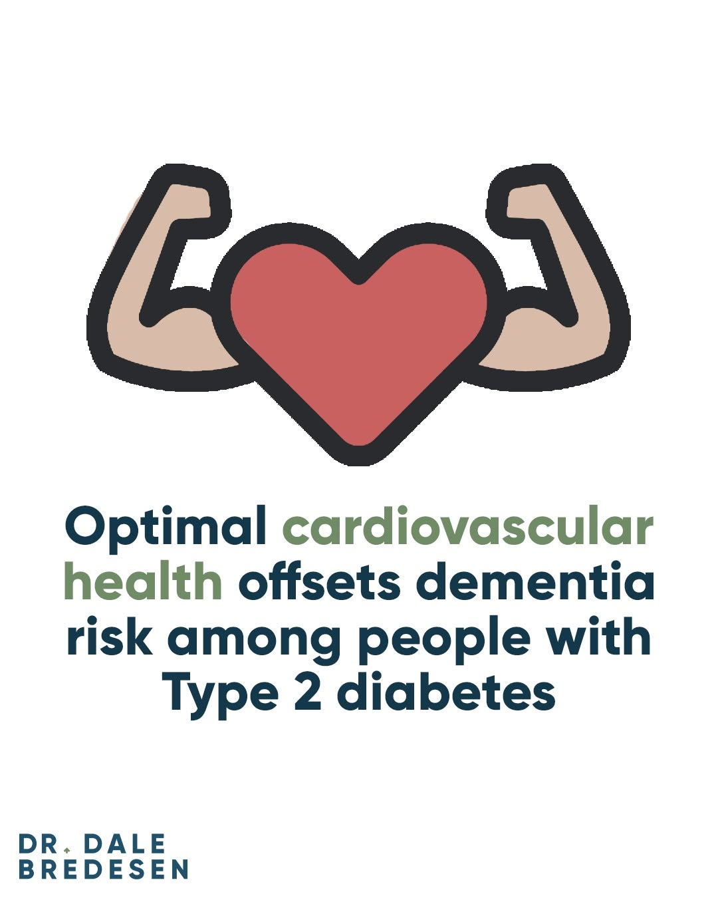

The same risk factors that best predict heart disease, also predict cancer— particularly lung cancer and colon cancer.
#cancerHD #lungcancerHD #coloncancerHD #lifesessential8HD #ahaHD #ldlcancerHD
A JACC CardioOncology study shared by Louis found worse cardiovascular health metrics predict greater cancer risk, with the strongest links for lung and colorectal cancer. This supports shared risk factors across CVD and cancer.
The same risk factors that best predict heart disease, also predict cancer— particularly lung cancer and colon cancer.
#cancerHD #lungcancerHD #coloncancerHD #lifesessential8HD #ahaHD #ldlcancerHD
Worse #CVD risk scores or CV health metrics predict greater cancer risk, despite heterogeneity in CVD risk metrics and cancer types, according to a study published in #JACCCardioOnc. The association was particularly strong with lung and colorectal cancers.
Get the details:
Paper · JACC: CardioOncology · 2025Cardiovascular Risk, Health Metrics, and Cancer Predictionjacc.org

Louis notes that achieving the AHA 7 cardiovascular health targets associates with lower cancer as well as heart disease risk, citing the ARIC study.
Louis quotes Harvard's Nutrition Source page correcting myths about dietary fat. It says polyunsaturated fats from vegetable oils, nuts and seeds help ward off type 2 diabetes, trans fats do the opposite, and the PREDIMED Mediterranean diet with olive oil or nuts reduced cardiovascular events.

Louis highlights the widely cited 2020 NEJM review on dairy and disease risk. It concludes that high dairy intake is not supported for preventing fractures, is not clearly linked to weight, diabetes or CVD, and may raise prostate and endometrial cancer risk while lowering colorectal cancer risk. Effects depend on the comparison food: dairy fares better than processed red meat or sugary drinks but worse than nuts.
Louis quotes a September 2025 JACC: CardioOncology state-of-the-art review noting that AHA, ACC, ACS, NCCN and WCRF/AICR guidelines all recommend a predominantly whole-food plant-based diet, as does the EAT-Lancet consensus. Patterns like Mediterranean and DASH are included, emphasizing fruits, vegetables, whole grains, legumes, nuts, seeds and olive oil while minimizing red meat.

Louis shares an AHA release showing that adults with type 2 diabetes and high genetic dementia risk who had moderate or high Life's Essential 8 cardiovascular health had much lower risk of mild cognitive impairment and dementia over 13 years. The eight factors are blood pressure, cholesterol, fasting glucose, smoking, BMI, exercise, diet and sleep.

Louis shares a Medscape report on a new AHA statement on multidimensional sleep health and cardiovascular health, urging clinicians to ask about more than sleep duration.